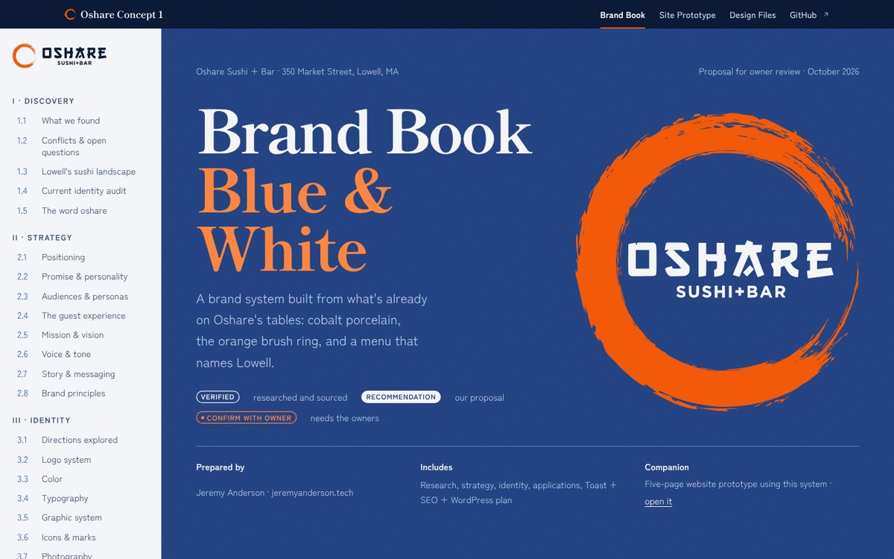
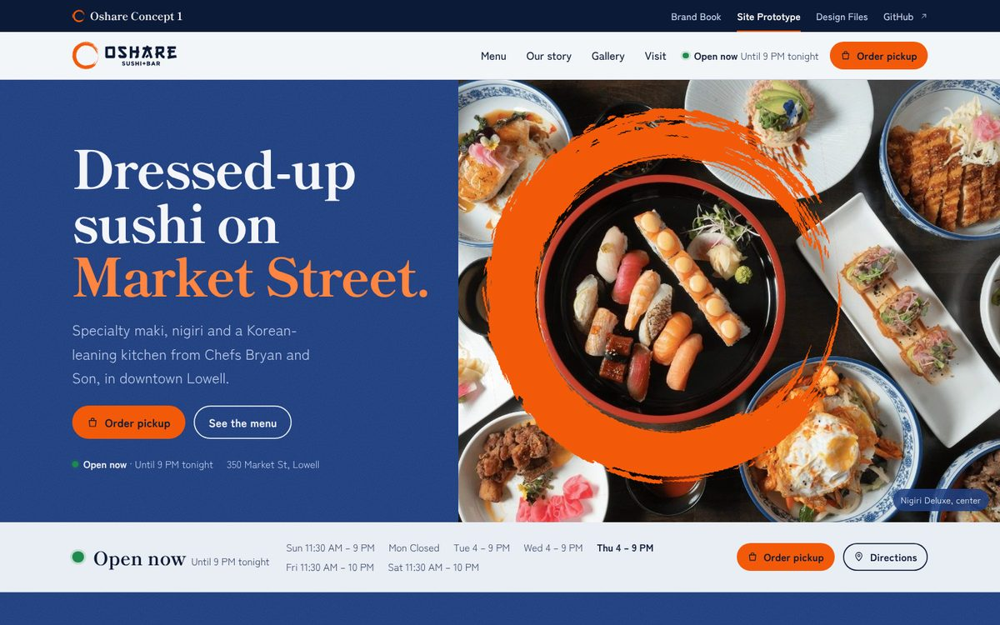

Concept 1 Blue & White
A brand book and a five-page website prototype for Oshare Sushi + Bar, 350 Market Street, Lowell. Built from the restaurant's own cobalt porcelain, its orange brush ring, and a menu that names Lowell.

Brand BookDiscovery, strategy, identity, applications and the build plan: Toast integration, SEO, WordPress, tokens, asset inventory and the owner checklist.Read it
Site PrototypeHome, Menu, Our Story, Gallery and Visit. Real photos, all 124 dishes with Toast order links, live open-now status.Explore itDesign files
Everything behind the concept, in the repository.
PRODUCT.mdProduct truth: users, positioning, verified facts and open questions.DESIGN.mdThe Blue & White design system: tokens, type, layout, components, do's and don'ts.design/direction-contract.mdThe chosen direction and first-viewport contract the build was held to.design/design.jsonMachine-readable design system sidecar: ramps, motion, components.design/tokens/tokens.cssCSS custom properties for the theme.design/tokens/theme.jsonWordPress block theme tokens.design/logoVector logo family traced from the restaurant's mark, plus the original PNG.design/data/menu.jsonAll menu items, prices and Toast item links, captured Oct 8, 2026.toolsPython builders that regenerate every page from the data.
About this concept. Food photography and the logo belong to Oshare Sushi + Bar and are used here for a proposal, with permission still to be confirmed. Menu, prices and hours were captured from public sources on October 8, 2026. Orange dashed notes on the prototype mark facts the owners still need to confirm; they can be hidden from the site footer.